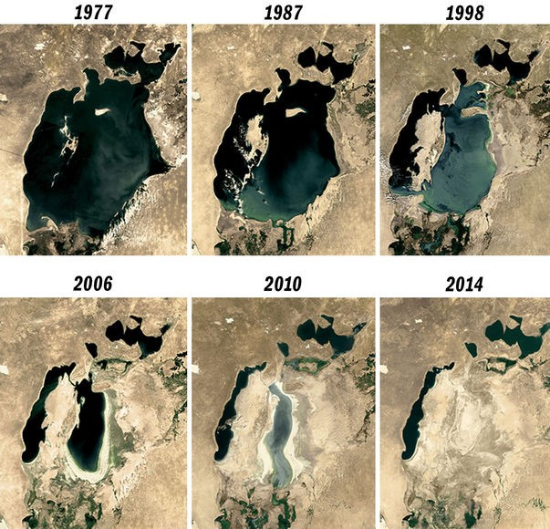

Inson ekologiyasi — bu insonlar va ularning tabiiy, ijtimoiy va texnogen (qurilgan) muhitlari oʻrtasidagi munosabatlarni oʻrganuvchi fanlararo va transdissiplinar sohadir. U anʼanaviy ekologiya tushunchalaridan tashqariga chiqib, insoniyatni ekotizimning ajralmas qismi sifatida qaraydi. Ushbu yondashuvga koʻra, insonlar boshqa tirik mavjudotlar kabi ekologik va evolyutsion jarayonlarga boʻysunadi, biroq ayni paytda oʻzining noyob madaniyati va texnologiyalari bilan atrof-muhitga kuchli taʼsir koʻrsatadi.
Inson ekologiyasi insoniyat aholi punktlari va tabiiy muhit oʻrtasidagi aloqalarni oʻrganish orqali barqaror rejalashtirish va rivojlanishning birinchi qadami hisoblanadi. Bu soha antropologiya, sotsiologiya, biologiya va iqtisodiy tarix kabi fanlarning gʻoya va usullarini birlashtirib, atrof-muhit adolati va barqarorlik kabi murakkab masalalarni har tomonlama tahlil qilish imkonini beradi.
Oʻzbekiston kontekstida ekologik tafakkurning ildizlari chuqur tarixga ega boʻlib, Abu Rayhon Beruniy va Abu Ali ibn Sino kabi Markaziy Osiyo allomalarining asarlarida tabiat va inson oʻrtasidagi bogʻliqlik haqidagi qarashlar oʻz ifodasini topgan. Zamonaviy davrda esa, ayniqsa, inson faoliyati natijasida atrof-muhit holatining keskin yomonlashuvi inson va ijtimoiy ekologiya fanlarining rivojlanishiga turtki boʻldi.
Bugungi kunda Oʻzbekistonda inson ekologiyasining asosiy vazifasi aholi va atrof-muhitning bir-biriga oʻzaro taʼsirini oʻrganishdan iboratdir. Bu fanning fanlararo yondashuvi mamlakat uchun shunchaki akademik tushuncha emas, balki hayotiy zaruratdir. Orol dengizi fojeasi kabi eng jiddiy ekologik muammolar sof biologik halokat emas, balki inson qarorlari, ijtimoiy-siyosiy va iqtisodiy tizimning mahsulidir.
BMTning “World Population Prospects 2024” hisobotiga koʻra, global aholi sonining jadal oʻsish davri yakunlanib bormoqda. Dunyo aholisi 2080-yillarda taxminan 10,3 milliard kishiga yetib, choʻqqisiga chiqadi va keyin asta-sekin kamayishni boshlaydi.
Asosiy omillar: tugʻilish darajasining pasayishi (hozir 2,3 ta bola/ayol), aholining qarishi va mintaqaviy farqlar (Afrika oʻsmoqda, Xitoy, Yevropa, Rossiya kamaymoqda).
2025-yil boshida Oʻzbekiston aholisi — 37,5 million kishi. Yiliga 2,2% oʻsish (kuniga ~2100 kishi). Prognoz: 2030-yil — 41+ mln, 2050-yil — 50 million.
Aholi tarkibi juda yosh: 57% — mehnatga layoqatli, 32% — bolalar, faqat 11% — keksalar. Zichlik ortib bormoqda: 2025-yilda 83,6 kishi/km² (Toshkent shahri — 6909 kishi/km²).
Bu demografik oʻsish suv resurslari (80% transchegaraviy), yer degradatsiyasi va iqlim oʻzgarishi bilan birgalikda oʻtkir ekologik bosim yaratmoqda.
Yosh aholining katta ulushi “demografik dividend” imkoniyatini beradi — agar taʼlim, ish oʻrinlari, infratuzilma va sogʻliqni saqlashga katta sarmoya kiritilsa, iqtisodiy oʻsish tezlashadi. Aks holda, ishsizlik va ijtimoiy keskinlik bilan “demografik yuk”ka aylanadi.
Inson ekologiyasi aynan shu murakkab muammolarni yaxlit koʻrib, barqaror rivojlanish yoʻlini topishga yordam beradi.